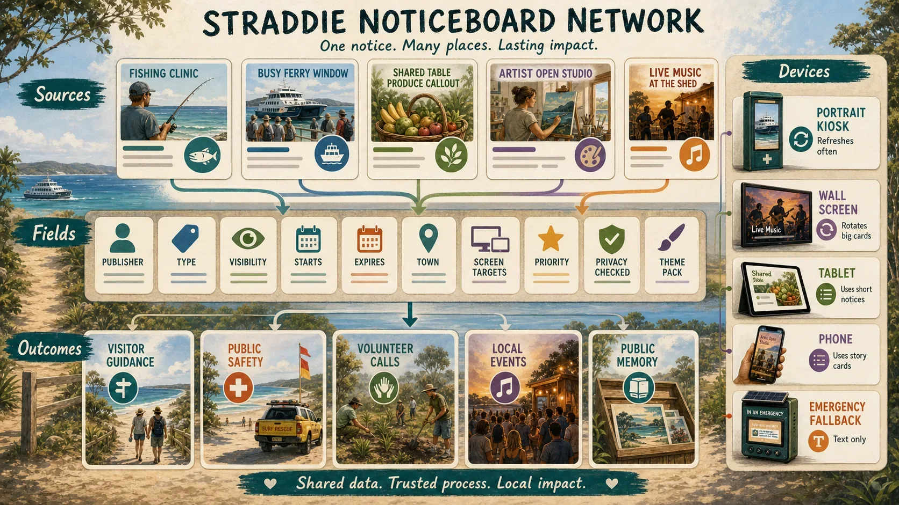

Ready S.E.T. Co-op + Hyperlocal Media
The companion site for training, work pathways and community storytelling.
Open public page Source repoThe maker-space is stronger when it links to the existing public ecosystem: people, training, media, noticeboards, disaster kiosks, shared meals, gardens, materials, resilience, grants and sister Strange But True pages.

Most readers are not developers. These cards open the readable public pages. The source repo is included as a secondary trail for builders and reviewers.
The companion site for training, work pathways and community storytelling.
Open public page Source repoThe people layer for recruitment, skills, onboarding, local service and contribution pathways.
Open co-op page Source repoThe local signal layer for public updates, practical learning, project stories and community trust.
Open media page Source repoMarkdown-to-screen public noticeboard patterns for local updates and agent-friendly records.
Open noticeboard page Source repoA form-like page for creating public_noticeboard.md content.
Open builder Source repoLocal builders for tool sharing, learning requests, build ideas, repair intake, experiment prompts and material offers.
Open local forms Source repoA lawful pre-tip diversion and reuse concept for items offered before they become waste.
Open Tip Loop Source repoA material-literacy concept for concrete, recycled inputs, small non-structural tests and clear safety boundaries.
Open concrete page Source repoEveryday island screens that can carry local notices, weather context, repair offers, training clips and calm emergency information when pressure hits.
Open disaster kiosks Source repoThe food resilience layer: gardens, pantries, preserving, surplus rescue, kitchen planning and trusted local food circles.
Open Shared Table Source repoA site-neutral future support concept for capsule accommodation, compute, civic simulation and health surge pressure testing.
Open capsule lab Source repoThe larger materials imagination around mineral sands, future manufacturing and public/private boundaries.
Open Mineral Moonshots Source repoA nearby public concept for sand sport, screen culture, markets, youth crews and gateway energy in Dunwich.
Open Ballow Road hub Source repoReusable local media and content-asset patterns that could support maker-space notices and campaign materials.
Open assets kit Source repoA public grant-readiness pathway that can help turn workshop, repair, food, resilience and local media ideas into fundable notes.
Open grants lab Source repoThe broader family doorway for public worlds, ledgers, samples and related Strange But True pages.
Open Strange But True Source repoThe public source for this site after release.
Open live site Source repoA community notice or Markdown form could become a workshop night. The workshop night could produce a repair, a shared-tool record, a food-growing support part, a concrete sample, a photo, a short learning card and a grant note. Ready S.E.T. could turn that into training evidence. Hyperlocal media, noticeboards and disaster kiosks could turn it into public signal.
What if each linked page answered one part of the same public question: how does local capability become visible enough to support?
Notice. A need appears: repair, waste stream, event gear, tool request, concrete question or learning session.
Make. The maker-space hosts the safe practical work.
Publish. Hyperlocal media, noticeboards and kiosk screens make the work findable.
Feed and fund. Shared Table sees what can be grown, cooked or rescued, while Grants Lab and sponsors see evidence, not just aspiration.